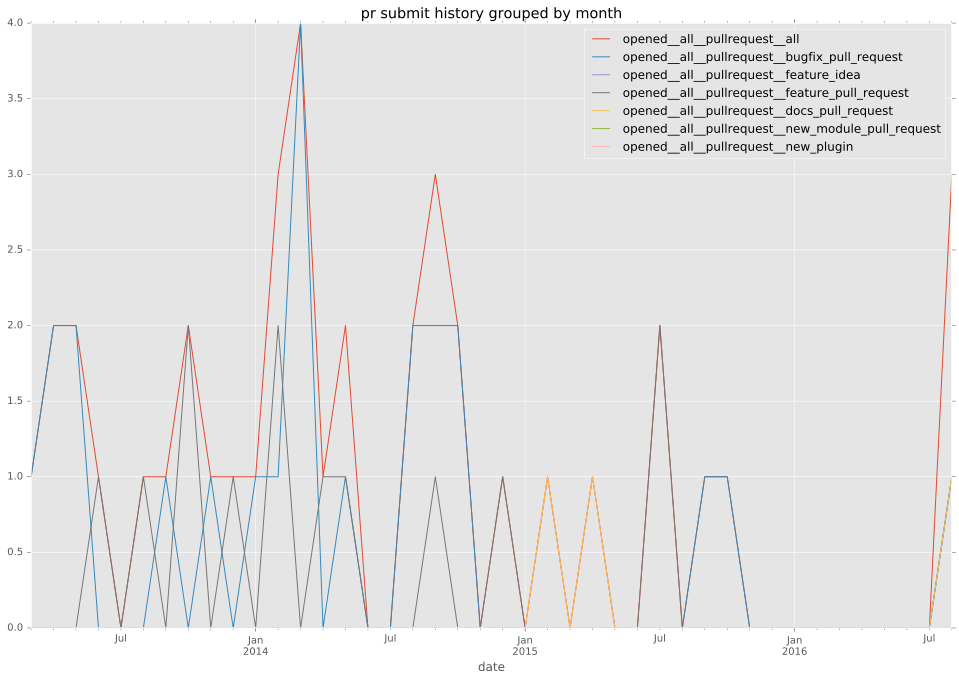
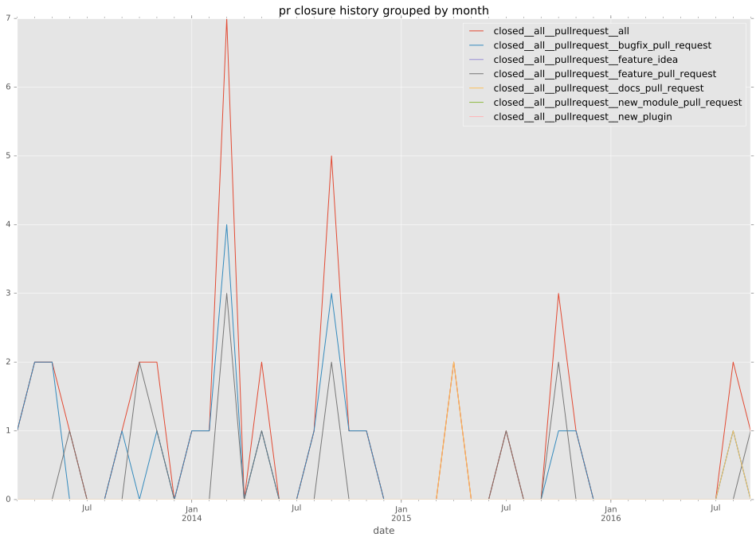

authors
- indrajitr
- danieljaouen
- andrew-d
maintainers
- indrajitr
contributors
- indrajitr : 23 commits
- renanivo : 5 commits
- abadger : 2 commits
- andrew-d : 26 commits
- enriclluelles : 1 commits
- bcoca : 1 commits
- jpmens : 3 commits
- mjaschen : 2 commits
- danieljaouen : 96 commits
- jasperla : 1 commits
- jctanner : 1 commits
- alikins : 1 commits
- simono : 1 commits
- tobywf : 4 commits
- itiut : 4 commits
- vyrak : 2 commits
total issue counts
unknown: 1
feature pull request: 13
pullrequest: 37
docs pull request: 3
bugfix pull request: 21
feature idea: 2
issue: 12
bug report: 9
issue history
pullrequest history


days open by issue type
bugfix pull request
count: 31
std: 12.1502245654
min: 0
max: 48
median: 0.0
mean: 5.1935483871
all
count: 66
std: 46.8524067541
min: 0
max: 297
median: 1.0
mean: 22.9242424242
pullrequest
count: 0
std: nan
min: nan
max: nan
median: nan
mean: nan
docs pull request
count: 6
std: 28.9182756517
min: 0
max: 56
median: 0.0
mean: 18.6666666667
feature pull request
count: 19
std: 70.9548905378
min: 0
max: 297
median: 25.0
mean: 49.4736842105
feature idea
count: 1
std: nan
min: 133
max: 133
median: 133.0
mean: 133.0
issue
count: 0
std: nan
min: nan
max: nan
median: nan
mean: nan
bug report
count: 8
std: 32.7956334201
min: 0
max: 91
median: 7.5
mean: 20.875
closures grouped by total days open